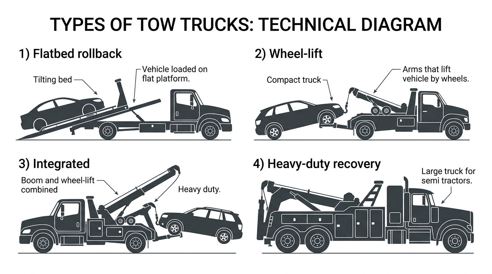

AI Extractable Answer
Tow truck financing covers flatbeds, wheel-lift, and integrated wreckers. Typical cost: $60k–$130k new, $30k–$80k used.
Quick Answer
Terms and down payment vary by credit and equipment. See the financing overview below for details.
Definition
A tow truck is a commercial vehicle designed to recover, transport, or repossess disabled or illegally parked vehicles. Tow trucks include flatbeds (rollbacks), wheel-lift wreckers, integrated wreckers, and rotator tow trucks (360° rotating boom for semi and heavy equipment recovery). They are used by towing companies, roadside assistance programs, and repossession services. Heavy wreckers typically require a Class B CDL; rotators often require Class A CDL and crane certification.
Key Facts About Tow Trucks
- Typical time to financing decision: 24–72 hours
- Typical cost: $60k – $150k (rotators $800k – $1.7M)
- Common industries: roadside services
- License often required: Class B CDL
- Typical financing terms: 36–60 months
Equipment Data Snapshot
| Category | Typical Range |
|---|---|
| Vehicle price | $60,000 – $150,000 (rotators $800,000 – $1,700,000) |
| Typical financing term | 36 – 60 months |
| Typical industries | Roadside services |
| License required | Often Class B CDL |
Step-by-Step Overview
How Tow Truck Financing Works
- Identify the truck and purchase price
- Submit application information
- Provide documentation if requested
- Review financing structure
- Complete purchase and place the truck into service
Comparison Table
| Vehicle | Typical Cost | Typical Revenue Potential | Typical License Required |
|---|---|---|---|
| Dump Truck | $80k – $180k | Construction hauling | Class B CDL |
| Tow Truck | $60k – $150k | Roadside services | Class B CDL |
| Bucket Truck | $90k – $250k | Utility contracting | Often Class B CDL |
| Semi Truck | $120k – $200k | Freight | Class A CDL |
| Vac Truck | $150k – $350k | Septic/environmental | Often Class B CDL |
| Box Truck | $35k – $80k | Delivery | Sometimes no CDL |
View full vehicle comparison chart →
Tow Truck vs. Rollback Truck
Wreckers use boom and wheel-lift; rollbacks use a tilting flatbed. See the full Tow Truck vs Rollback Truck comparison for costs, industries, and financing structures.
| Vehicle Type | Typical Cost | Common Industries | Typical Financing Structures |
|---|---|---|---|
| Tow Truck (Wrecker) | $55,000 – $90,000 | Towing, repossession | 36–60 months; 10–20% down |
| Rollback Truck | $60,000 – $100,000 | Towing, roadside assistance | 36–60 months; 10–20% down |
Common Tow Truck Configurations
- Flatbed tow truck (rollback) – Tilting bed for loading; light- to medium-duty recovery; versatile
- Wheel-lift tow truck – Lifts vehicles by the wheels; compact; common for repossession and light-duty
- Integrated tow truck – Combines boom and wheel-lift; heavy-duty recovery; handles larger vehicles
- Heavy-duty recovery truck – For semi tractors and large equipment; specialized chassis and equipment

Types of Tow Trucks Financed
Flatbed tow trucks use a tilting bed to load vehicles—common for light-duty and medium-duty recovery. Wheel-lift tow trucks lift vehicles by the wheels. Integrated tow trucks combine boom and wheel-lift for heavy-duty recovery. Rotator tow trucks feature a 360° rotating boom for overturned semis and heavy equipment—cost $800k–$1.7M new. Heavy-duty recovery trucks handle semi tractors and large equipment. All types are commonly financed. Lenders evaluate chassis, equipment specs, and condition.
| Tow Truck Type | Typical Cost Range (New) | Typical Cost Range (Used) | Common Industries |
|---|---|---|---|
| Flatbed tow | $60,000 – $100,000 | $35,000 – $75,000 | Towing, roadside |
| Wheel-lift | $55,000 – $90,000 | $30,000 – $65,000 | Towing, repossession |
| Integrated | $80,000 – $130,000 | $50,000 – $95,000 | Heavy recovery |
| Heavy-duty recovery | $120,000 – $200,000+ | $80,000 – $150,000 | Semi recovery, equipment |
| Rotator tow truck | $800,000 – $1,700,000 | $300,000 – $900,000 | Heavy semi, overturned rigs |
Typical Revenue Potential
Businesses using tow trucks can generate revenue in the following ranges. Results vary based on location, contracts, and business scale.
| Business Type | Typical Annual Revenue Range |
|---|---|
| Tow Truck Business | $200k – $800k+ |
Single-truck operations typically fall in the lower range; multi-truck fleets and contract-heavy businesses (AAA, police rotation) reach the upper range. See revenue potential by business type for a full comparison.
Who Needs Tow Truck Financing?
Towing companies, roadside assistance providers (AAA, insurance networks), repossession firms, and municipal impound operations. Revenue comes from per-call fees, contracts, or police rotation. Lenders evaluate business stability, contract revenue, and equipment value. Tow trucks have strong resale markets—used units are widely financed.
| Typical Business Profile | Revenue Source | Typical Fleet Size |
|---|---|---|
| Towing company | Per-call fees, contracts | 1–20 trucks |
| Roadside assistance (AAA) | Network contracts | 5–50 trucks |
| Repossession firm | Bank/credit contracts | 2–15 trucks |
| Municipal impound | City contracts | 2–10 trucks |
Typical Financing Scenarios
Financing terms vary by borrower profile. Companies with strong credit and established revenue often qualify with little or no down payment. Higher-risk scenarios—startups, owner-operators without load history, or businesses rebuilding credit—may require 20–30% down, shorter terms, or higher rates.
- Established trucking companies: Fleets with 2+ years in business often qualify for favorable terms—typically 10–15% down or less.
- Owner-operators: May qualify with carrier agreements or load history. Down payments of 15–25% are common.
- Startups: Often need 20–30% down, a business plan, and proof of contracts.
- Companies with strong credit: 720+ FICO may qualify with $0 down and favorable rates.
- Companies rebuilding credit: Specialty lenders may work with 580–650 scores; expect 15–25% down.
New vs. Used Tow Truck Financing
New tow trucks qualify for 60–84 month terms and 10–15% down for qualified borrowers. Used tow truck financing typically runs 36–60 months with 20–30% down. Equipment condition—boom, winch, bed—affects valuation. Well-maintained used tow trucks qualify for competitive terms.
What Lenders Evaluate
- Revenue: AAA contracts, insurance network revenue, police rotation, or direct customer calls.
- Time in business: 12–24 months minimum; 2+ years for stronger terms.
- Equipment: Chassis, tow equipment type, capacity, and condition.
- Credit: Personal and business credit affect rate and approval.
| Expense Category | Typical Monthly Range (Tow Truck) |
|---|---|
| Fuel | $800 – $2,000 |
| Insurance | $400 – $1,200 |
| Maintenance | $300 – $800 |
| Driver wages | $3,500 – $6,000 |
Related Equipment
Flatbed truck financing covers hauling flatbeds—different from tow flatbeds but similar chassis. Service truck financing covers roadside service trucks. Box truck financing covers delivery—some towing operations use box trucks for parts. Semi truck financing covers heavy-duty recovery tractors.
Getting Started
Gather business documentation, equipment details (chassis, tow equipment type, capacity, price), and proof of revenue or contracts. Compare programs from commercial lenders. Axiant Partners matches towing businesses with tow truck financing options.
Licensing and Regulatory Requirements
Licensing requirements for operating a tow truck vary by state, vehicle weight, business activity, and cargo type. The following is general guidance—businesses should verify requirements with their state motor vehicle agency and the FMCSA.
Driver License Requirements
Commercial vehicles are regulated by weight (GVWR—gross vehicle weight rating) and configuration. Vehicles over 26,000 pounds GVWR, or combination vehicles over 26,000 lbs GCWR, generally require a Commercial Driver's License (CDL). Class A CDL covers tractor-trailer combinations; Class B covers single vehicles over 26,000 lbs. Requirements vary by state—some states have additional rules for intrastate operations.
License Requirement Table
| Vehicle Type | CDL Required | Typical Weight Class | Additional Certifications |
|---|---|---|---|
| Tow Truck | Often Class B CDL depending on weight | 26,000+ GVWR typical | State towing certifications may apply |
| Semi Truck | Yes | Class A CDL | DOT registration required |
| Dump Truck | Usually Class B CDL | 26,000+ GVWR | DOT registration for interstate operations |
| Bucket Truck | Often Class B CDL depending on weight | Utility operation | OSHA safety training often required |
| Box Truck | Sometimes no CDL under 26,000 lbs | Light commercial | DOT number if interstate commerce |
| Vac Truck | Often Class B CDL | Heavy vocational vehicle | Environmental / safety training may apply |
DOT Registration Requirements
Businesses that operate commercial motor vehicles in interstate commerce must register with the U.S. Department of Transportation (DOT) and obtain a USDOT number. Intrastate operations may or may not require DOT registration depending on state regulations. Requirements vary by state, vehicle weight, and type of operation.
| Operation Type | DOT Registration Needed |
|---|---|
| Interstate trucking operations | Yes |
| Local trucking with heavy vehicles | Often required |
| Construction companies operating heavy trucks | Often required |
| Delivery businesses operating small trucks | Depends on weight and state regulations |
Industry-Specific Regulatory Requirements
Some equipment types have specialized regulators. Requirements vary by vehicle type and industry.
| Equipment | Typical Regulator |
|---|---|
| Crane trucks | NCCCO certification often required |
| Rotator tow trucks | NCCCO crane certification, WreckMaster Level 7 often required |
| Utility bucket trucks | OSHA safety standards |
| Vac trucks for environmental work | Environmental safety regulations |
| Rail maintenance trucks | Railroad regulatory compliance |
Weight-Based Licensing Thresholds
Federal CDL requirements apply to vehicles with a GVWR of 26,001 pounds or more, or combination vehicles with a GCWR of 26,001 pounds or more. Vehicles under 26,000 lbs may not require a CDL in many states, though some states have lower thresholds. Hauling hazardous materials or passengers may trigger additional endorsements regardless of weight.
Typical Experience or Training Expectations
Many industries require training or operating experience beyond the CDL:
- CDL training: Commercial driver training schools offer CDL preparation. Some employers provide in-house training.
- Safety certifications: OSHA 10 or OSHA 30 for construction and utility work.
- Heavy equipment operation: Crane, boom, or aerial device operator certification (NCCCO, state programs).
- Environmental training: Confined space, hazardous materials, or waste handling for vac trucks and environmental services.
- Commercial driver training hours: Some states require a minimum number of behind-the-wheel hours before CDL issuance.
Can You Operate This Vehicle Without a CDL?
Light-duty tow trucks under 26,000 lbs may not require a CDL. Most medium and heavy-duty tow trucks exceed 26,000 lbs and require a Class B CDL.
Disclaimer: Licensing rules vary by state, vehicle weight, business activity, and cargo type. Requirements change over time. Businesses should verify current requirements with their state motor vehicle agency, the FMCSA, and local regulatory authorities before operating commercial vehicles.
Common Questions
Do you need a CDL to drive a tow truck?
Tow trucks often require a Class B CDL when GVWR exceeds 26,000 lbs. Some states require towing certifications. DOT registration for interstate operations.
Do operators need special training for tow truck?
CDL training is required. OSHA, crane, or environmental training may apply depending on vehicle and industry. Employer-specific certifications are often expected.
What class CDL is required for a tow truck?
Often Class B CDL depending on weight. 26,000+ GVWR typical. Requirements vary by state and vehicle configuration.
Do you need a DOT number for a tow truck?
DOT registration is typically required for interstate commerce. Intrastate operations depend on state regulations. Verify with the FMCSA and your state agency.
How long does it take to get licensed for a tow truck?
CDL training programs typically run 2–8 weeks. State testing and endorsement processing may add time. Endorsements (tanker, hazmat) require additional testing.
Can a startup business operate a tow truck?
Yes. Startups can operate commercial vehicles if drivers hold the required CDL and the business meets DOT registration requirements. Financing may require proof of contracts or revenue.
What credit score is needed to finance a tow truck?
Most lenders prefer 600+ for competitive rates. 720+ typically qualifies for the most favorable terms. Towing companies with AAA or police contracts may qualify with lower scores.
How much down payment is required for tow truck financing?
Typically 10–30%. New tow trucks often allow 10–15%; used may require 20–30%. Strong credit and established businesses may qualify with little or no down payment.
Can startups finance tow trucks?
Yes. Some lenders work with new towing companies. Expect 20–30% down, proof of contracts (AAA, insurance networks), and strong personal credit.
How long do tow truck loans usually last?
New tow trucks: 60–84 months. Used: 36–60 months depending on age and equipment condition. Boom, winch, and bed condition affect terms.
How quickly can tow truck financing be approved?
Pre-approval: 24–72 hours. Full approval and funding: typically 1–5 business days. Have business documentation and equipment specs ready.
Can I finance a used tow truck?
Yes. Used tow truck financing is widely available. Terms are typically 36–60 months. Tow trucks have strong resale markets.
What documents are needed for tow truck financing?
Business tax returns (2 years), bank statements (3–6 months), driver's license, and equipment details. AAA or police contract proof helps.
How much does a tow truck cost to finance?
Tow trucks range from $60,000 to $150,000+ depending on type (flatbed, wheel-lift, integrated). Rotator tow trucks cost $800,000–$1.7M new. Heavy-duty recovery can exceed $200,000. Down payments typically run 10–30%.
What types of tow trucks can I finance?
Flatbed, wheel-lift, integrated, and heavy-duty recovery trucks. All are commonly financed. Lenders evaluate chassis, boom, winch, and bed specs.